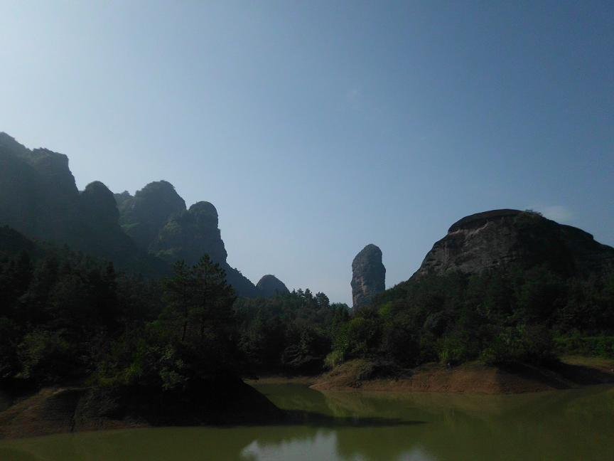
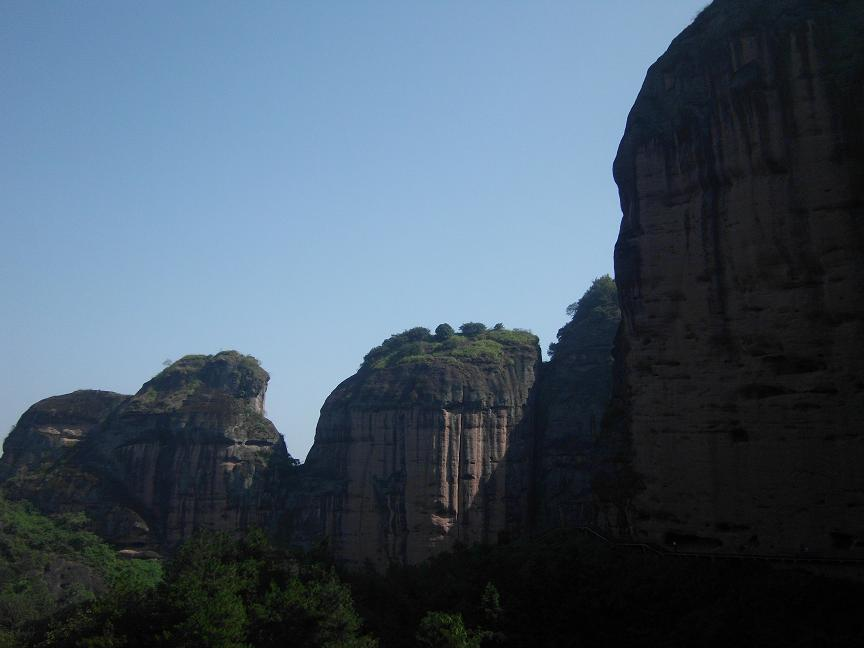
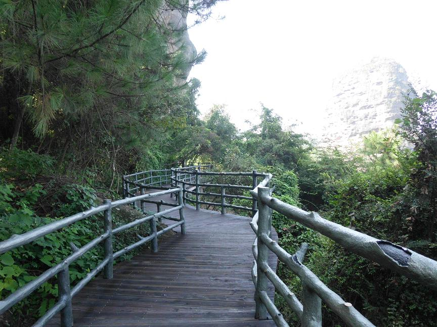
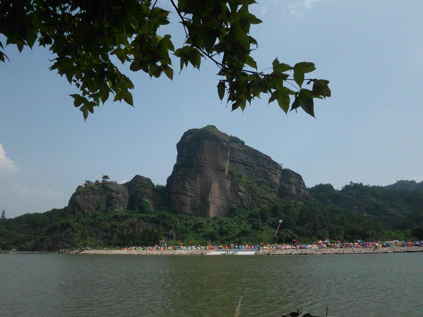
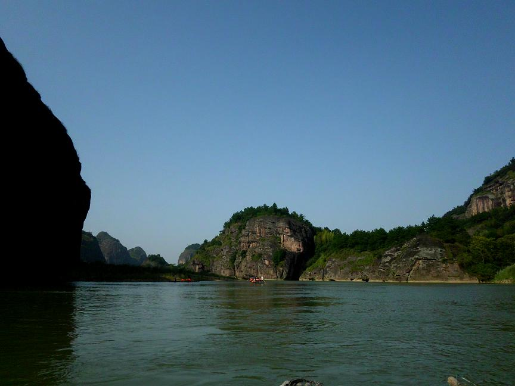
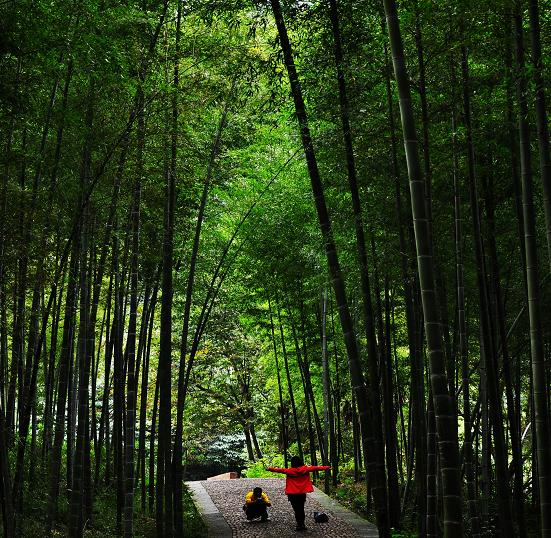

【棋外世界】龙虎山记
#1 【棋外世界】龙虎山记作者：茗弈小水滴 发表时间：2012-5-7 16:10:55
以丹霞地貌，奇峰怪石，山水相依著称的龙虎山闻名遐迩。近日，我有幸参加公司举办的笔会成行。同伴皆为文人，一路妙语连珠，解舟车之疲惫。
至鹰潭，第二日游龙虎山。一排着绿戴帽的衙役，恭敬候在山前迎客，愿来是龙虎山的迎客峰——排衙峰。但见“衙役”个个体格粗壮，头大身圆，齐齐身子向前倾着，拱起的红色砂岩似在作揖。蜿蜒的山路，茂密的丛林，鸟鸣声此起彼伏，不绝于耳。路边高大挺拔的板栗树上挂满了毛茸茸的果子。偶尔成熟的果子从树上落下，“啪嗒”声响在林间清晰可闻。一洼清泉如明镜镶嵌在山谷，水面清澈见底，有几条白肚黑背小鱼悠然嬉耍水草间。
顺栈道扶栏而上，山石陡峭，怪壁嶙峋，峰峦攒簇，层波叠翠。高者巍峨耸立，直入云端；低者低眉下首，婉约温柔。壁石坑洼不平，形状各异：有的粗细不一，狭长逼仄，远观似红色瀑布飞悬而下；有的密密麻麻，或圆或缺，如银河万点星光。站在山顶，龙虎山，空气清爽，白云如絮；山色如娥，淡点红妆；温风如酒，吹之欲醉；山花如锦，香气满林。
隔着数里有一石壁，泉水缓缓流壁而下。拐弯处一凹行石壁上手指粗的藤蔓沿着岩石肆意舒展，细如发丝的根须，青如翡翠的碧叶加上清晨的阳光将山峰打扮的神采奕奕，苏光流才。穿过竹条搭架的凉亭，纤细的藤萝从间隙垂下，形成了绿色的门帘。拂去额前的藤叶，一头巨象在白雾笼罩下隐约可见。巨象长鼻低垂至地面，象背高耸，四脚如柱，皆从地面拔地而起，浑然天成。我不禁感慨造物主的鬼虎神工，为之倾倒。这桂林漓江上的象鼻山何时来龙虎山作客？也许是被景色所迷，乐而忘返了吧？
一路走来，感受颇多。龙虎山给我留下印象最深刻的地方不是惟妙惟肖的象鼻山；也不是坐竹筏顺流而下，清澈见底的泸溪河；更不是庙宇林立的上清宫，天师府；而是绵延数十里，赴壁而凿的栈道。大小相同，颜色统一的原木，沿着崎岖蜿蜒的山路，井然有序地铺着，如一条地龙，趴在群山俊林的腰间。上不着天，下不着地，任凭浮云从脚下穿过，群鸟疾飞跃过。
听着脚下高跟鞋发出的声响在山谷来回飘荡，时时打破山谷的幽静。好吧，我得承认为了好看，我竟然穿着高跟鞋爬山。与周围旅游鞋发出沉闷声响相比，一路“咯噔，咯噔”清脆的声响就这样敲响在栈道上。原以为会很累，也准备强撑。令人惊喜的是走在平稳的栈道上如履平地，丝毫未感到爬山的辛苦，有如闲亭漫步，悠然自在。
找遍了栈道四周，没找到一个空眼和搭脚架的痕迹。俯视深不见底的山谷，浓浓的白云不断从谷底冒出。强劲的山风把我的长发吹得银蛇乱舞。当年的石匠是如何克服重重困难，在龙虎山修建如此壮观宏伟的栈道？我也只能于想象中啧啧称赞了。
这是人类在自然界创造出来的另一个伟大奇迹。只要努力，人类就可以扭转乾坤，掌握自己的命运。





［ 茗弈宽容 于 2012-5-7 16:38:58 时奖励此帖[金币加 100 威望加1］
［ 雅匪 于 2012-5-13 21:25:56 时花20金币送鲜花一朵］
［ 轻拈花落 于 2012-5-23 9:36:51 时花20金币送鲜花一朵］
#2 Re:【棋外世界】龙虎山记作者：茗弈宽容 发表时间：2012-5-7 16:41:45
山美，水美，千美万美不及妹妹的笔美！
［ 茗弈小水滴 于 2012-5-10 16:59:34 时花20金币送鲜花一朵］
［ 茗弈小水滴 于 2012-5-10 16:59:49 时花20金币送鲜花一朵］
#3 Re:【棋外世界】龙虎山记作者：茗弈的飞猪 发表时间：2012-5-11 14:27:55
爱五网上难得看到小水滴这个水平的文章，不爱看这个题材也得顶一下［ 茗弈小水滴 于 2012-5-11 14:36:08 时花20金币送鲜花一朵］
#4 Re:【棋外世界】龙虎山记作者：茗弈宽容 发表时间：2012-5-11 16:25:14
很久没看到飞猪了啊，猛一乍现，恍如隔世。。。。。。#5 Re:【棋外世界】龙虎山记作者：吉小鼠 发表时间：2012-5-11 19:59:03
江西龙虎山~~~ 话说我这个江西人都还没去过呢~~ 是很美 地方美 文也不错~~［此帖子已被 吉小鼠 在 2012-5-11 20:00:45 编辑过］
［ 茗弈宽容 于 2012-5-12 11:41:42 时花20金币送鲜花一朵］
［ 茗弈小水滴 于 2012-5-19 22:09:23 时花20金币送鲜花一朵］
#6 Re:【棋外世界】龙虎山记作者：雅匪 发表时间：2012-5-13 21:25:46
确实是“爱五网上难得看到”。
“苏光流才”这个“词”是什么意思呀（本意和释义）？能否教下：）
［ 茗弈宽容 于 2012-5-14 18:07:33 时花20金币送鲜花一朵］
［ 茗弈小水滴 于 2012-5-19 22:09:57 时花20金币送鲜花一朵］
#7 Re:茗弈宽容【==Re:【棋外世界】龙虎山记==】作者：茗弈的飞猪 发表时间：2012-5-14 11:28:33
引用：刀刀别来无恙？黑黑黑。。
原文由 茗弈宽容 发表于 2012-5-11 16:25:14 :
很久没看到飞猪了啊，猛一乍现，恍如隔世。。。。。。
#8 Re:【棋外世界】龙虎山记作者：茗弈宽容 发表时间：2012-5-14 18:03:24
还凑合吧，老样子。倒是你久了没见似乎脾气见涨，你乖点嘛，别去惹事，得罪朋友。蛮久米和你下棋了，没事来三手找我下下棋哈！［此帖子已被 茗弈宽容 在 2012-5-14 18:06:07 编辑过］
#9 Re:雅匪【==Re:【棋外世界】龙虎山记==】作者：茗弈小水滴 发表时间：2012-5-19 22:08:40
雅匪，(*^__^*) 嘻嘻……，不好意思，“苏光流才”是我自创的词语，意思等同于“流光溢彩”：爬山时正赶上日出，金色的阳光照耀在山峰，光线像流水般流动闪耀着，色彩像要溢出一样，如梦幻王国，不觉陶醉。［ 茗弈宽容 于 2012-5-24 9:17:02 时花20金币送鲜花一朵］
#10 Re:吉小鼠【==Re:【棋外世界】龙虎山记==】作者：茗弈小水滴 发表时间：2012-5-19 22:12:26
吉小鼠，江西龙虎山风景美轮美奂，确实值得一去。不过最好是不要参加旅游团，时间安排很仓促，未免走马观花，意犹未尽……#11 Re:茗弈小水滴【==Re:雅匪【==Re:【棋外世界】龙虎山记==】==】作者：雅匪 发表时间：2012-5-19 22:46:25
引用：谢谢你啊
原文由 茗弈小水滴 发表于 2012-5-19 22:08:40 :
雅匪，(*^__^*) 嘻嘻……，不好意思，“苏光流才”是我自创的词语，意思等同于“流光溢彩”：爬山时正赶上日出，金色的阳光照耀在山峰，光线像流水般流动闪耀着，色彩像要溢出一样，如梦幻王国，不觉陶醉。
#12 Re:茗弈宽容【==Re:【棋外世界】龙虎山记==】作者：茗弈的飞猪 发表时间：2012-5-21 12:52:11
引用：我没得罪朋友啊，刀刀。是不是误会了
原文由 茗弈宽容 发表于 2012-5-14 18:03:24 :
还凑合吧，老样子。倒是你久了没见似乎脾气见涨，你乖点嘛，别去惹事，得罪朋友。蛮久米和你下棋了，没事来三手找我下下棋哈！［此帖子已被 茗弈宽容 在 2012-5-14 18:06:07 编辑过］
 。我早不下棋了，以后混论坛
。我早不下棋了，以后混论坛
#13 Re:【棋外世界】龙虎山记作者：茗弈宽容 发表时间：2012-5-21 14:14:29
有则改之，无则加勉吧，俺当你朋友才提醒一下哈。 论坛更米啥混的说实话。
论坛更米啥混的说实话。#14 Re:【棋外世界】龙虎山记作者：茗弈的飞猪 发表时间：2012-5-22 18:20:53
有人吵架就有意思，没人吵架就没意思
#15 Re:【棋外世界】龙虎山记作者：茗弈宽容 发表时间：2012-5-22 23:27:33
哦，明白了。你来论坛就是为了吵架！！！可别打着我茗弈的棋号那！#16 Re:【棋外世界】龙虎山记作者：茗弈的飞猪 发表时间：2012-5-24 8:40:03
刀刀你误会了，我的意思是说一个论坛的人气很多时候就是靠争议性话题来维持，并不是我来论坛就是为了吵架。这几天白痴老师、伟鬼老师他们帖子里吵架的那么多，我一直在围观，也没跟着搀和；再者，我做事从来只代表我自己，不代表茗弈，更从来没有打着茗弈旗号做什么坏事的想法；最后，你当着这么多人这么说我，我很难过。［ 茗弈宽容 于 2012-5-24 9:17:36 时花20金币送鲜花一朵］
#17 Re:【棋外世界】龙虎山记作者：茗弈宽容 发表时间：2012-5-24 9:16:08
好了，我可能理解错了你的意思，这里道歉。我们做好自己就行了，不关自己的事少参合的好。